Sgvizler 0.6
Table of Contents
Introduction
Sgvizler is a JavaScript library which renders the result of SPARQL SELECT queries into charts or HTML elements; see Screenshots for examples.
Charts may be included directly into your web pages simply by adding
HTML elements of the following form to your page, using
data-sgvizler- prefixed HTML attributes to specify the SPARQL
endpoint, SPARQL query and chart function (More options and usages
are available, see Using):
<div id="example" data-sgvizler-endpoint="http://sws.ifi.uio.no/sparql/npd" data-sgvizler-query="SELECT ?class (count(?instance) AS ?noOfInstances) WHERE{ ?instance a ?class } GROUP BY ?class ORDER BY ?class" data-sgvizler-chart="google.visualization.PieChart" style="width:800px; height:400px;"></div>
The above block will render into the following pie chart (here shown as a static, scaled down screenshot). A minimal working example of this is found at ./example/quick-start.html.
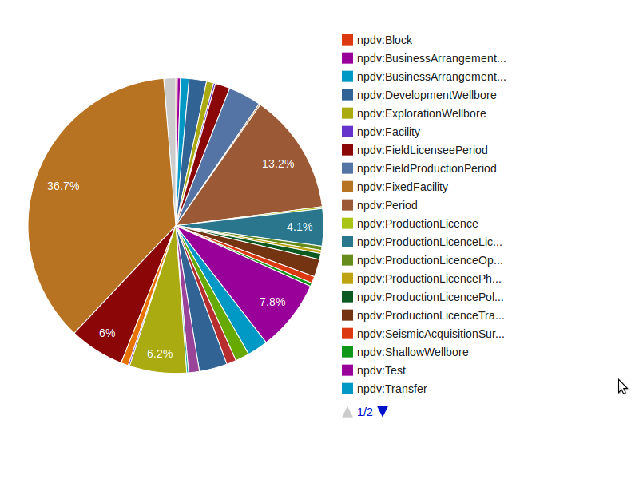
In brief, Sgvizler draws a chart by:
- Given a SPARQL query and a SPARQL endpoint, querying the endpoint for the result set, which must be in either SPARQL Query Results XML Format or SPARQL Query Results in JSON format.
- The results are then parsed into the JSON format that Google prefers.
- While the result set is collected and parsed, the designated visualisation function, e.g., simple DOM manipulation, a Google chart, or other external visualisation library (e.g., D3), is loaded.
- When the query result set and visualisation function are ready, the result set is visualised.
Sgvizler supports all the major chart types offered by the Google Visualization API. Additionally, Sgvizler is extended with a set of functions for drawing graphs—using external javascript libraries, and functions for building basic HTML structures, like tables, lists and text blocks. The same extension mechanism is available to Sgvizler's users, meaning user-defined visualisation functions may easily be added to Sgvizler's repertoire.
If you use Sgvizler in your academic work, please cite the following paper (There is also a poster available):
Martin G. Skjæveland. Sgvizler: A JavaScript Wrapper for Easy Visualization of SPARQL Result Sets. In: 9th Extended Semantic Web Conference (ESWC 2012), workshop and demo proceedings. Heraklion, Crete, Greece, 2015.
The name and tool relies on and/or is inspired by SPARQL, Google Visualization API, SPARQLer, Snorql and Spark.
This page describes version 0.6 of Sgvizler. For earlier versions consult the old Sgvizler site: http://dev.data2000.no/sgvizler/.
Setup
To set up Sgvizler on your own site you will need to include a few javascripts to your pages and configure Sgvizler to fit your SPARQL endpoints and dataset—for the latter see Using.
To include the Sgvizler script, either
- Download a copy of Sgvizler and run a local copy on your webserver,
use cdnjs(not yet available, #39),- or use one of the following URI (possibly slow):
- http://mgskjaeveland.github.io/sgvizler/v/0.6/sgvizler.min.js
- Minified version.
- http://mgskjaeveland.github.io/sgvizler/v/0.6/sgvizler.js
- Not minified, and including comments. Use for testing and bug reporting.
The following libraries must also be included:
- Google Visualization API
- Includes many chart types and the `DataTable` object, which is the input to the visualisation functions and a handy object for manipulating the result set.
- jQuery
- Used for communicating with the SPARQL endpoint and to manipulate the DOM.
Below is a working example for including the necessary javascripts:
<script type="text/javascript" src="//cdnjs.cloudflare.com/ajax/libs/jquery/1.9.0/jquery.js"></script> <script type="text/javascript" src="https://www.google.com/jsapi"></script> <script type="text/javascript" src="http://mgskjaeveland.github.io/sgvizler/v/0.6/sgvizler.js"></script>
Using
There are three intended ways to use Sgvizler:
- Put SPARQL queries directly in HTML containers
- Use a HTML form to query SPARQL endpoints
- Use Sgvizler's JavaScript API
In all cases you may want to setup Sgvizler with a your own default
values. Your Sgvizler instance is probably best configured by a
series of functions defined on the sgvizler object, setting
prefixes, the default endpoint, default chart, default chart size
and so on; see the documentation for the complete list:
./doc/0.6/classes/sgvizler.html—these options are similar to the
available sgvizler attributes described below. Settings given for a
specific HTML container or on a Query object instance, as
explained below, will override the values set on the sgvizler
object.
This javascript block exemplifies how to set a few values which will be used for all future queries issues by Sgvizler, unless the values are later reset. This example setup is used for all the live examples this section.
sgvizler
.prefix("ex", "http://example.org#")
.defaultEndpointURL("http://dbpedia.org/sparql")
.defaultQuery("SELECT * { ?a ?b ?c, ?d, ?e } LIMIT 7")
.defaultChartFunction("sgvizler.visualization.Table")
.defaultChartWidth(500)
.defaultChartHeight(500);
1. Query stored in HTML container
Add <div> elements, or other suitable HTML containers, and
include special (HTML5 compatible) data-sgvizler- prefixed
"sgvizler attributes", to get HTML of the following format:
<div id="myExample" data-sgvizler-endpoint="http://sws.ifi.uio.no/sparql/npd" data-sgvizler-query="SELECT ?class (count(?instance) AS ?noOfInstances) WHERE{ ?instance a ?class } GROUP BY ?class ORDER BY ?class" data-sgvizler-chart="google.visualization.PieChart" data-sgvizler-chart-options="is3D=true|title=Number of instances" style="width:800px; height:400px;"></div>
Sgvizler must also be told to draw the chart. This is normally easiest done by loading all such HTML "sgvizler containers" on page load with the following javascript call (See ./example/usage-container-drawall.html for a live example which draws the above chart):
$(document).ready(
function (){ sgvizler.containerDrawAll(); }
);
Individual containers can be drawn with the call …
$(document).ready(
function (){ sgvizler.containerDraw("myExample"); }
);
… where myExample is the id attribute value of the container
to be drawn. (See ./example/usage-container-drawone.html for a live
example)
See the documentation, of the sgvizler and Query objects
especially, for the description of these and other functions.
Sgvizler HTML attributes
The list below explains the HTML attributes that Sgvizler require and recognise (Required attributes are marked by *).
- id*
- Some identifying string, e.g.,
myExample. The identifier for the HTML container to put the visualisation results. The value must be unique to all elements on the same page. - data-sgvizler-query*
- A SPARQL query string. The SPARQL SELECT query specifying a query result to fit the visualisation function. The query result set (number of columns and datatypes) must fit the format required by the selected visualisation function; find the chart and description here [wiki:Sgvizler/Chart].
- data-sgvizler-endpoint
- A URL string to a SPARQL endpoint, e.g.,
http://dbpedia.org/sparql. - data-sgvizler-endpoint_output
- The format Sgvizler shall ask the endpoint to return query
results as. Possible values are
json,jsonporxml, the default isjson. - data-sgvizler-rdf
- List of URLs to RDF files. The list must be separated by
|-characters. This is just a shorthand way of telling Sgvizler to include a list of FROMs in the query. The configured endpoint reads the RDF files and executes the query over them; this means that the files must be accessible to the endpoint and the endpoint must allowFROMin queries. - data-sgvizler-chart
- The visualisation function to use. The value is the name of
the chart object, e.g.,
google.visualization.LineChartorsgvizler.visualization.Table. Find the value for the chart you want on its [wiki:Sgvizler/Chart] page. - data-sgvizler-chart-options
- A list of options which are sent to the chart function. Each
option is given as
option=valueand each option-value-pair is separated with a vertical bar, e.g.option1=value1|option2=value2. See the relevant [wiki:Sgvizler/Chart] page for available options. - data-sgvizler-loglevel
- To what extent Sgvizler shall give feedback to the user. This feature is not yet implemented.
- style
- This is just the normal way of adding css style to your
elements, but
widthandheightwill also be picked up by Sgvizler to determine the size of the chart. The default values are respectively 800px and 400px. - data-sgvizler-endpoint_query_url
- Part of a URL to append to SPARQL endpoint URL such that this,
together with the SPARQL query forms a link that will print
the results of the query, i.e., (SPARQL endpoint URL) + (this
variable) + (query) = (query results (in a web
browser)). Default is
?output=text&query=. This is used when an error occurs and allows the users to check if the query results are as expected, directly from the endpoint. - data-sgvizler-validator_query_url
- URL to some SPARQL validator such that this URL plus the
SPARQL query forms a link that will validate the given query,
i.e., (the value of this attribute) + (query) = (a url to the
validation results for query). Default value is
http://www.sparql.org/query-validator?languageSyntax=SPARQL&outputFormat=sparql&linenumbers=true&query=.
2. Query Form
Add an HTML form with input fields for SPARQL query, SPARQL endpoint and chart function. The form closely resembles the query forms of SPARQLer and Snorql.
Add the form to your site by using the function
sgvizler.drawForm(elementID), where elementID is the HTML
element ID of where to put the form—if no argument is provided,
then the body element is used.
<div id="myForm"></div> <script type="text/javascript"> $(document).ready(function() { sgvizler.formDraw("myForm"); }); </script>
An example of the above code and form is found here: ./example/usage-query-form.html.
3. Using Sgvizler's API
Use the available public functions for the sgvizler and Query
object when you need a different configuration than the two
above. See the documentation and give attention to Query
object. Here is an example of how to use the API to draw charts,
the live version is here: ./example/usage-api.html.
<script> var Q = new sgvizler.Query(); // Create a Query instance. // Values may also be set in the sgvizler object---but will be // overwritten here. Q.query("SELECT * {?s ?p ?o} LIMIT 10") .endpointURL("http://dbpedia.org/sparql") .endpointOutputFormat("json") // Possible values 'xml', 'json', 'jsonp'. .chartFunction("google.visualization.Table") // The name of the function to draw the chart. .draw("myElementID"); // Draw the chart in the designated HTML element. </script> <div id="myElementID"></div>
If you want to directly access and manipulate the query results, use
the function Query.getDataTable(success, fail) and register
functions that are applied to the resulting query results'
datatable on success and on failure. The function getDataTable
does not ''return'' a datatable (but instead registers functions)
since retrieving the query results from the SPARQL endpoint is done
asynchronously.
var Q = new sgvizler.Query(), mySuccessFunc = function (datatable) { /* Do what you want with the datatable */ }, myFailFunc = function (datatable) { /* Handle the failure */ }; Q.query("SELECT * {?s ?p ?o} LIMIT 10") .endpointURL("http://dbpedia.org/sparql") .getDataTable(mySuccessFunc, myFailFunc);
Charts
When designing your SPARQL query for visualisation with Sgvizler the order and the datatypes of the variables in the SPARQL SELECT block is crucial. Check the specification of each of the visualisation functions below.
Live examples are found here: ./v/0.6/example/
Datatypes are decided only on the basis of the XSD datatype of the
values. xsd:int, xsd:long, xsd:integer, xsd:float,
xsd:double, xsd:decimal are typed as the javascript number
datatype", xsd:boolean as boolean; xsd:date and xsd:dateTime
as Date object; and xsd:time as a "timeofday" Array. The rest,
especially string, untyped literals and resources, are typed as
"string". Many of the charts expect certain columns to be of
datatype number; you may want to cast the results. NB: Sgvizler
sets the datatype for each column by looking at the first row of
results only.
It is also possible to preprocess the query results before they are passed on to the visualisation function, see Datatables.
The chart functions may have many different options, e.g., setting
colour, controlling axis and dimensions. Consult Google's page for
the options for their visualisations functions. The
sgvizler.visualisation functions are documented below. Feel free
to fork and improve these functions; they are found here:
github: src/visualization
Chart types
| Name | Chart function |
|---|---|
| Line Chart | google.visualization.LineChart |
| Area Chart | google.visualization.AreaChart |
| Area Chart | google.visualization.SteppedAreaChart |
| Column Chart | google.visualization.ColumnChart |
| Bar Chart | google.visualization.BarChart |
| Sparkline | google.visualization.ImageSparkLine |
| Scatter Chart | google.visualization.ScatterChart |
| Bubble Chart | google.visualization.BubbleChart |
| Pie Chart | google.visualization.PieChart |
| Candlestick Chart | google.visualization.CandlestickChart |
| Gauge | google.visualization.Gauge |
| Org Chart | google.visualization.OrgChart |
| Tree Map | google.visualization.TreeMap |
| Motion Chart | google.visualization.MotionChart |
| Timeline | google.visualization.AnnotatedTimeLine |
| Geo Chart | google.visualization.GeoChart |
| Geo Map | google.visualization.GeoMap |
| Map, Map+ | google.visualization.Map, sgvizler.visualization.Map |
| Table | google.visualization.Table, sgvizler.visualization.Table |
| Force-directed Graph | sgvizler.visualization.D3ForceGraph |
| Graph | sgvizler.visualization.DraculaGraph |
| List | sgvizler.visualization.List |
| Definition List | sgvizler.visualization.DefList |
| Text | sgvizler.visualization.Text |
Line Chart, Area Chart, Stepped Area Chart, Column Chart, Bar Chart
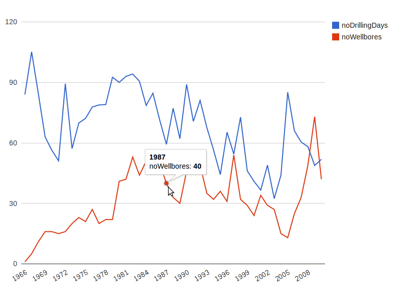
Figure 1: Line chart
Format: 2–N columns:
- The category label, i.e., the x-axis. Any datatype(?)
- 2nd.–Nth. column: each column represents a separate y-axis series. Datatype: number.
These chart types are very similar and have the same data format requirements. Line charts represents the relationship between the x-series and each y-series as a line. An area chart colours the area below this line. A column chart represents the relationship with vertical bars, and bar charts using horizontal bars.
Sparkline
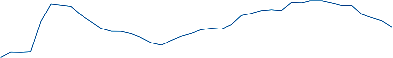
Figure 2: Sparkline
Format: 1–N columns: each column represents a separate y-axis series. Datatype: number.
Minimalistic line chart showing only the line, no labels or axis. Rendered as an image.
Scatter Chart
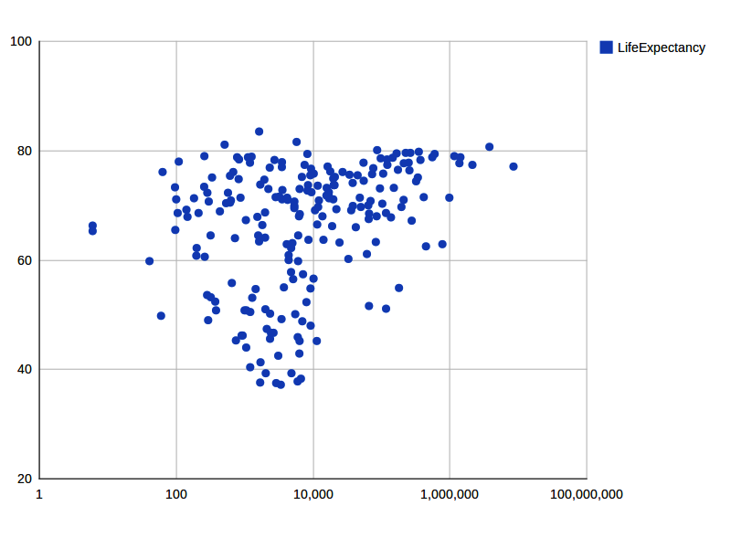
Figure 3: Scatter chart
Format: 2–N columns: (Google's description)
- The x-axis. Datatype: number.
- 2nd.–Nth. column: each column represents a separate y-axis series. Datatype: number.
Bubble Chart
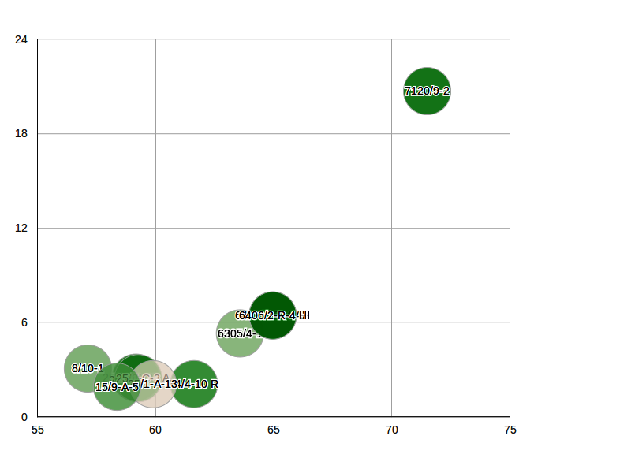
Figure 4: Bubble chart
Similar to scatter plot, but can represent additional dimensions using marker size and colour. See Google's description.
Pie Chart
Figure 5: Pie chart
Format: 2 columns: (Google's description)
- The pie slice label. Datatype: any?
- The pie slice value. Datatype: number.
Candlestick Chart
See the description at Google for the data format description and an example.
Gauge
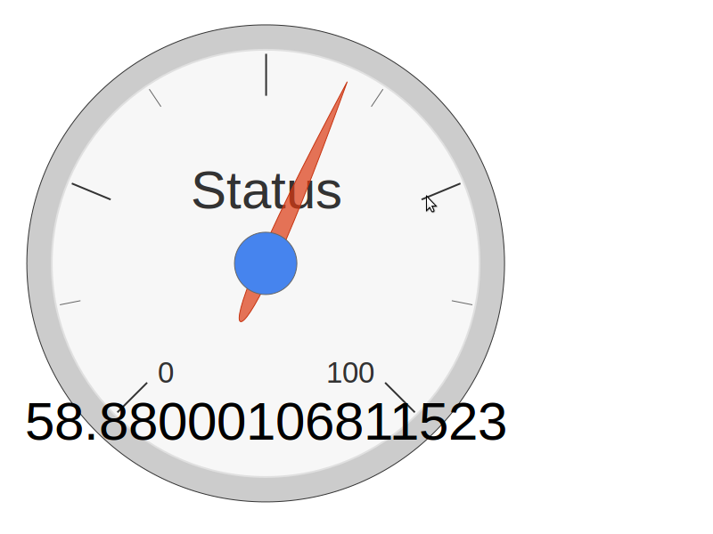
Figure 6: Gauge
Format: 2 columns: (Google's description)
- Value of gauge. Datatype: number.
- Name of gauge. Datatype: string.
Org Chart
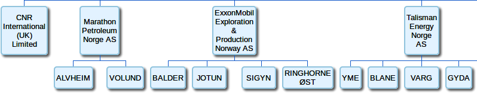
Figure 7: Org chart
Format: 1–3 columns: (Google's description)
- ID of node. Datatype: any.
- ID of parent. Datatype: any.
- Tool-tip text to show, when a user hovers over this node.
Draws trees representing the child-parent relation. See also Tree Map if you want to represent values of your node, and draw boxes and not trees.
Tree Map
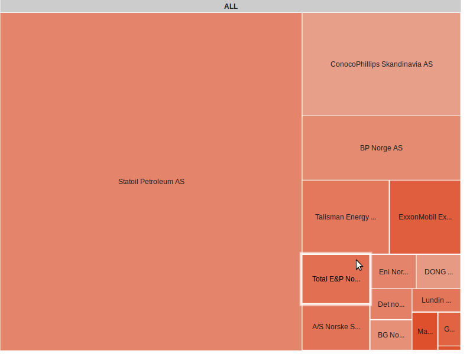
Figure 8: Tree map
Format: 3–4 columns: (Google's description)
- ID of node. Datatype: string.
- ID of parent. Datatype: string.
- A value which determines the size of the node. Datatype: number, must be positive.
- A value which determines the colour of the node. Datatype: number.
Draws a tree structure as a partitioned box. The size of the box is determined by the value of the third argument. The colour of the box of the fourth argument. Only the values of child nodes matter. Parents' value is the sum of its children values. Zoom in with left-clicks, zoom out with right-clicks. See Org Chart if you want trees and not boxes.
Motion Chart
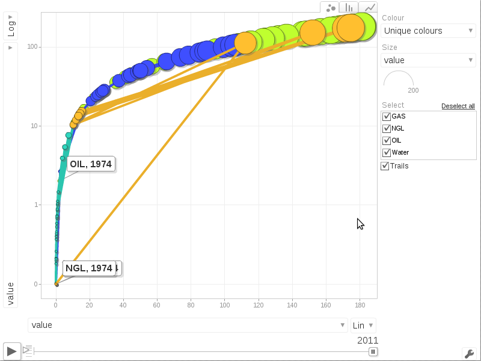
Format: 3–N columns: (Google's description)
- ID of the thing. Datatype: string.
- Timestamp for value. Datatype: different time formats, see Google's page.
- 3rd–Nth. column: Values. Datatype: string or number.
A complex chart type with animation and many different charts in one. Shows values for things over time. Value series can be turned on or off.
Timeline
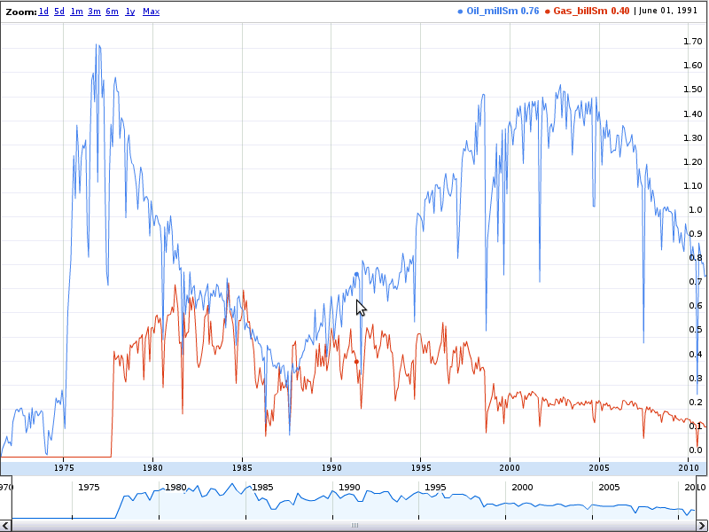
Figure 9: Timeline
Draws an interactive diagram with dates or timestamps on the x-axis and the y-axis series as line charts. Scroll back and forth, and zoom in time. Somewhat difficult data format, see Google's description for a description. Drawn using Flash. Requires that the size of the html container element is explicitly set.
Geo Chart
See Google's description for more information.
Geo Map
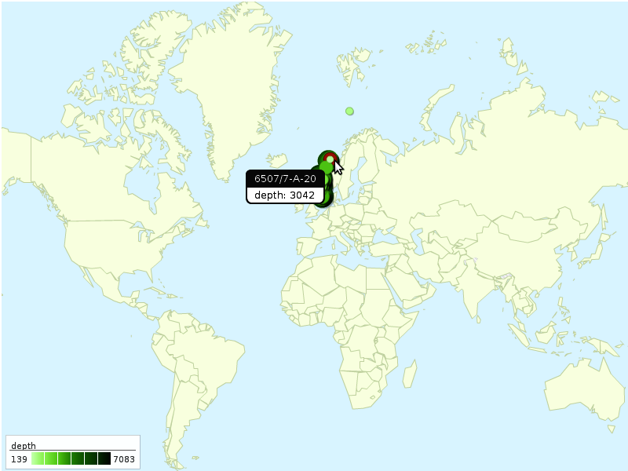
Figure 10: Geo map
Format: 2–4 columns: (Google's description)
- Latitude. Datatype: number.
- Longitude. Datatype: number.
- Value to display at the given position. Datatype: number.
- Label for the position. Datatype: string.
Draws a map and lays out the values of the 3rd column as circles of size and colour according to the size of the value. This chart offers few zooming and panning options.
Map
Format: 1–3 columns, the two first columns specify a geographical point, the optional third a name for the point. (See Google's description for details.) See also the chart type Map+ below. Displays markers on a Google Map. Max. 400 markers.
Map+
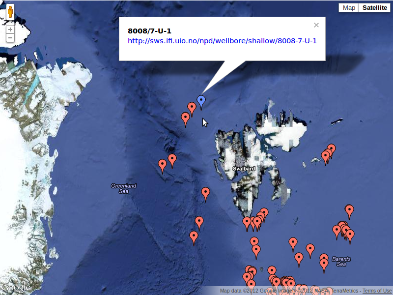
Figure 11: Map
This is a custom-made function which produces nicely formatted
html boxes to place on the markers of a Google Map Chart. If there
are less than four columns this chart behaves just like Map. All
options are passed through to Google's Map Chart, hence Map+
accepts the same options as Map does, except Map+ operates only in
dataMode=markers mode.
Format 2–6 columns:
- Latitude. Datatype: number.
- Longitude. Datatype: number.
- Heading. Datatype: any.
- Paragraph text. Datatype: any.
- Link. Datatype: any, but should be a URL.
- Image. Datatype: any, but should be a link to a small image.
Table
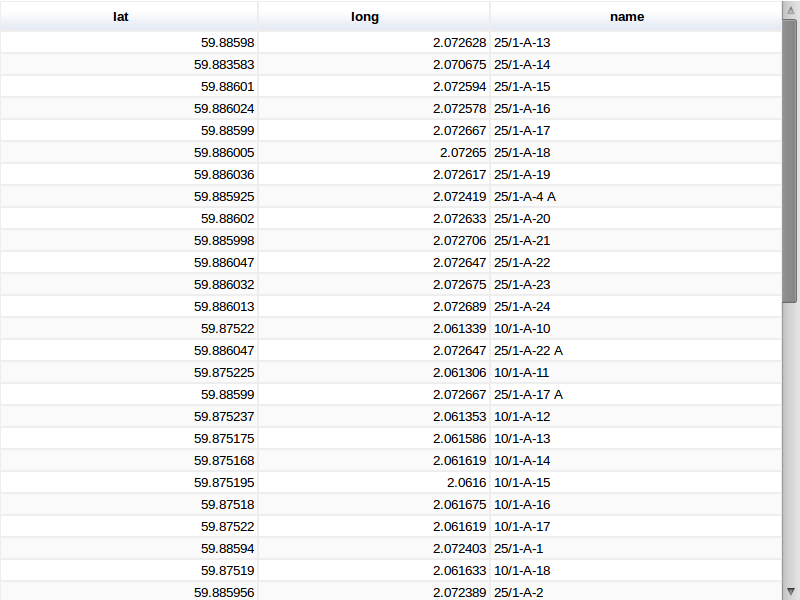
Figure 12: Table
The google.visualisation.Table shows the result set as a table,
including some formatting features, e.g., rows can be sorted by
clicking on columns. (Google's description).
The sgvizler.visualisation.Table function similarly shows the
results as a table, but uses plain HTML: <table>, <tr>, <th>,
<td>.
Force-directed Graph
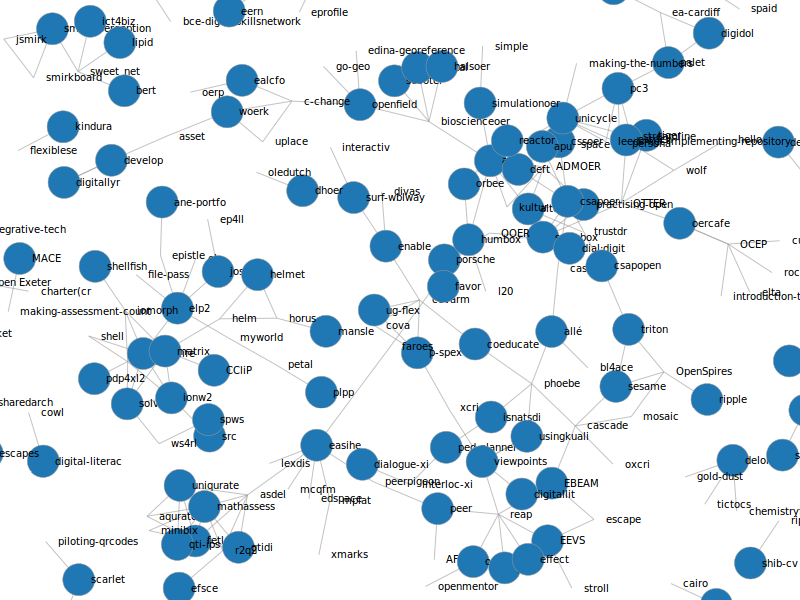
Figure 13: Force-directed graph
Format 2–4 columns:
- ID of source. Datatype: any.
- ID of target. Datatype: any.
- A value which determines the size of the node. Datatype: number, must be positive.
- A value which determines the colour of the node. Datatype: any.
This chart type function is written using the D3 JavaScript library. There are tons of possibilities for formatting the graph with this library, but only a few available through Sgvizler.
Chart options:
| Name | Default value |
|---|---|
| directed | false |
| noderadius | 0.5 |
| nodefontsize | "10px" |
| nodeheight | 20 |
| nodestrokewidth | "1px" |
| nodecornerradius | "1px" |
| nodepadding | 7 |
| nodecolor | "green" |
| edgestroke | "blue" |
| edgefill | "blue" |
| edgestrokewidth | 1 |
| edgefontsize | "10px" |
| edgeseparator | ", " |
Graph
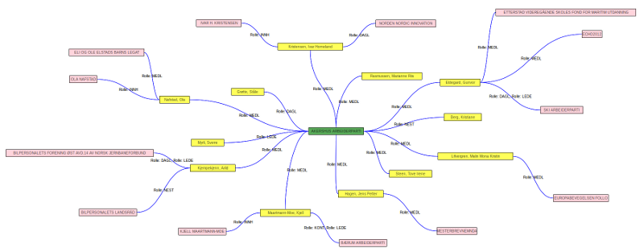
Figure 14: Graph
Format 4–7 columns:
- ID of source. Datatype: any, should be a URL.
- Label of source.
- ID of target. Datatype: any, should be a URL.
- Label of target.
- Label of edge between source and target. Multiple edges between same source and target are concatenated.
- Colour of source node.
- Colour of target node.
Chart options:
| Name | Default value |
|---|---|
| noderadius | 0.5 |
| nodefontsize | "10px" |
| nodeheight | 20 |
| nodestrokewidth | "1px" |
| directed | false |
| nodecornerradius | "1px" |
| nodepadding | 7 |
| nodecolor | "green" |
| edgestroke | "blue" |
| edgefill | "blue" |
| edgestrokewidth | 1 |
| edgefontsize | "10px" |
| edgeseparator | ", " |
List
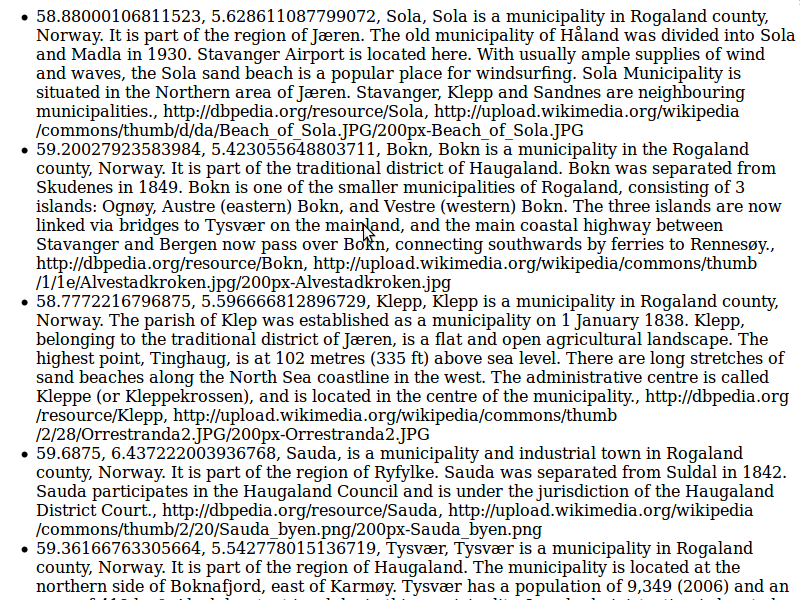
Figure 15: List
This is a custom-made function which produces a simple html list. It can be either numbered or bullets.
Format is any number of columns. All columns are treated as text.
Chart options:
| Name | Default | Description |
|---|---|---|
list |
ul |
Specifies the list type, should be either ul (unordered/bullets) or ol (ordered/numbered). |
cellSep |
", " | The glue between cells in each row. Can be html. |
rowPrefix |
(empty string) | String to prefix each row with. Can be html. |
rowPostfix |
(empty string) | String to postfix each row with. Can be html. |
Definition List
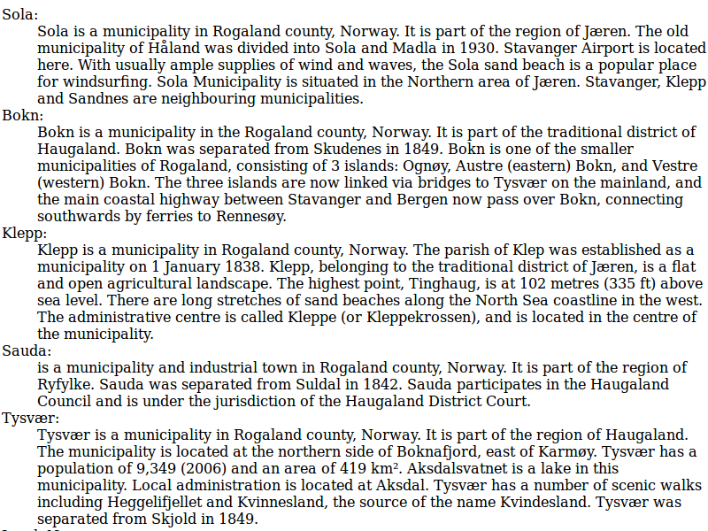
Figure 16: Definition list
Similar to List, but creates a html definition list.
Format two or more columns. All columns are treated as text. First column contains the terms to be defined, the rest contains the definition.
Chart options:
| Name | Default | Description |
|---|---|---|
cellSep |
", " | The glue between cells in each row. Can be html. |
termPrefix |
(empty string) | String to prefix each term with. Can be html. |
termPostfix |
: |
String to postfix each row with. Can be html. |
definitionPrefix |
(empty string) | String to prefix each definition with. Can be html. |
definitionPostfix |
(empty string) | String to postfix each definition with. Can be html. |
Text

Figure 17: Text
A generic text producer.
Any number of columns. The default treats the results as a block of text, each cell is a sequence of words, each row a paragraph.
Chart options:
| Name | Default | Description |
|---|---|---|
cellSep |
", " | The glue between cells in each row. Can be html. |
cellPrefix |
(empty string) | String to prefix each cell with. Can be html. |
cellPostfix |
(empty string) | String to postfix each cell with. Can be html. |
rowPrefix |
<p> |
String to prefix each row with. Can be html. |
rowPostfix |
</p> |
String to postfix each row with. Can be html. |
resultsPrefix |
<div> |
String to prefix the whole results with. Can be html. |
resultsPostfix |
</div> |
String to postfix the whole results with. Can be html. |
Datatables
It is possible to manipulate the data collected from the endpoint before is it passed on to the visualisation function. This can come in handy when certain functions are too complex or cumbersome to formulate as a SPARQL query. These functions takes as input and returns an object of type google.visualisation.DataTable, and are applied after the query results have been parsed into a datatable and before the datatable is sent to the visualization function.
Example
A simple example of such a function is
sgvizler.visualization.prefixify, which replaces all namespaces
with a prefix, using the namespace.prefixify function available in
the sgvizler.namespace object.
/** * Walks through all cells of columns with datatype string and * runs prefixify, which replaces namespace with its prefix. * * @method prefixify * @public * @param {google.visualization.DataTable} data * @return {google.visualization.DataTable} * @since 0.6.0 */ DT.prefixify = datatables.add(modST, 'prefixify', function (dataTable) { var c, clen = dataTable.getNumberOfColumns(), r, rlen = dataTable.getNumberOfRows(); for (c = 0; c < clen; c += 1) { if (dataTable.getColumnType(c) === 'string') { for (r = 0; r < rlen; r += 1) { dataTable.setValue(r, c, namespace.prefixify(dataTable.getValue(r, c)) ); } } } return dataTable; });
Extending
Sgvizler is built to be extended with user-defined functions.
To create your own visualisation or datatable function use the
function sgvizler.chartsAdd or sgvizler.datatablesAdd, see the
documentation for details. These functions have
has four input parameters:
-
module - The javascript namespace to where the function to be
created belongs, e.g.,
MyOwnNamespace -
name - The name of the function, e.g.,
HelloWorld -
func - The function, i.e., the function that does all the
work. For
chartsAdd, this function should take two arguments:function (datatable, chartOpt), wheredatais a Google DataTable object andchartOptis an object of options for the chart function. FordatatablesAddthe function must take a single argument of typegoogle.visualization.DataTable, as explained in Datatables. -
dependencies - An object of dependencies that function requires, typically external javascript libraries. Each attribute name of the object must be a function name that is contained in the javascript to be loaded.
Example
This is a simple (and useless) Hello World example, which displays
a table where all cells contain as default the value Hello World,
i.e., all values are replaced with this value. The default value
may be changed with the option word.
More real examples are found in src/visualization/.
Chart function
var MyOwnNamespace = {}; MyOwnNamespace.HelloWorld = sgvizler.chartsAdd( // 1. arg: module. "MyOwnNamespace", // 2. arg: function name. "HelloWorld", // 3. arg: visualisation function. function (datatable, chartOptions) { // collect from numbers from the datatable: var c, noColumns = datatable.getNumberOfColumns(), r, noRows = datatable.getNumberOfRows(), // set default values for chart options opt = $.extend({ word: 'Hello World' }, chartOptions), tablecontents = ""; for (r = 0; r < noRows; r += 1) { tablecontents += '<tr>'; for (c = 0; c < noColumns; c += 1) { tablecontents += '<td>' + opt.word + '</td>'; } tablecontents += '</tr>'; } $(this.container) .empty() .html(tablecontents); // Using an external library, loaded by the dependencies (arg. 4) new Tablesort(this.container); }, // 4. arg: dependencies. 'Tablesort' is the function we need. { Tablesort: "//cdnjs.cloudflare.com/ajax/libs/tablesort/1.6.1/tablesort.min.js" } );
Result
With the function MyOwnNamespace.HelloWorld defined as above, the result of the following HTML can be found in ./example/hello-world.html. Note that we change the default value in the options attribute to "Hi World".
<table id="example" style="border: 1px solid brown;" data-sgvizler-endpoint="http://dbpedia.org/sparql" data-sgvizler-query="SELECT * { ?s ?p ?o, ?o2 } LIMIT 6" data-sgvizler-chart="MyOwnNamespace.HelloWorld" data-sgvizler-chart-options="word=Hi World"> </table>
Screenshots
Samples of many of the chart types and renderings that Sgvizler can produce. The caption gives the function name. Click the caption for a larger image.
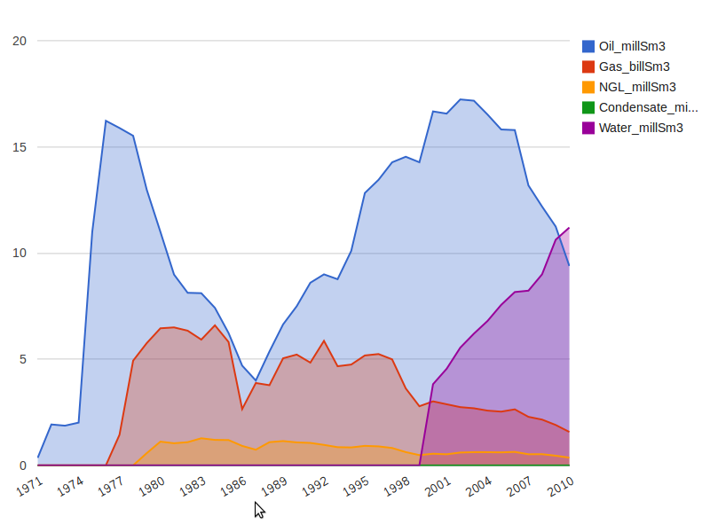
Figure 18: google.visualization.AreaChart
{kind=link}
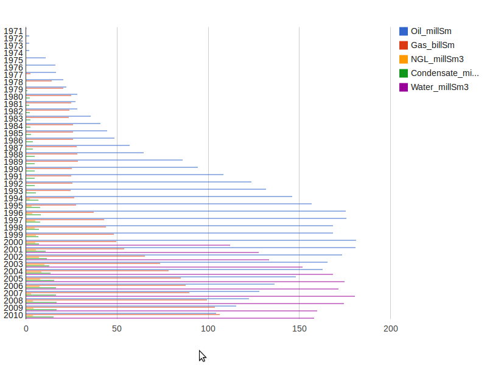
Figure 19: google.visualization.BarChart
{kind=link}
Figure 20: google.visualization.BubbleChart
{kind=link}
Figure 21: google.visualization.Gauge
{kind=link}

Figure 22: google.visualization.GeoChart
Figure 23: google.visualization.GeoMap
{kind=link}
Figure 24: google.visualization.LineChart
{kind=link}
Figure 25: google.visualization.MotionChart
{kind=link}
Figure 26: google.visualization.OrgChart
{kind=link}
Figure 27: google.visualization.PieChart
{kind=link}
Figure 28: google.visualization.ScatterChart
{kind=link}
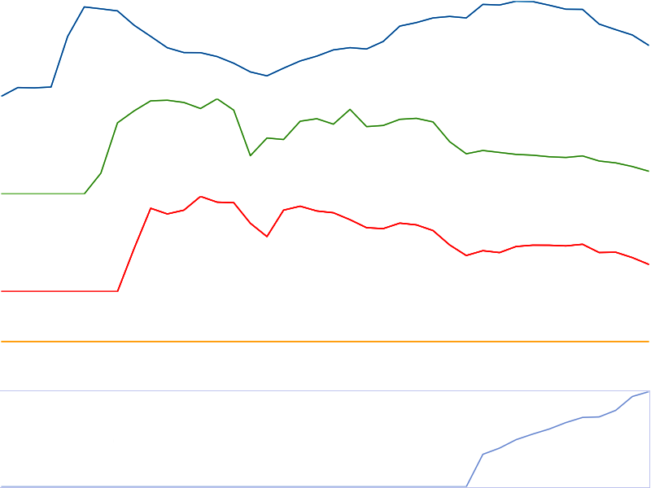
Figure 29: google.visualization.ImageSparkLine
{kind=link}
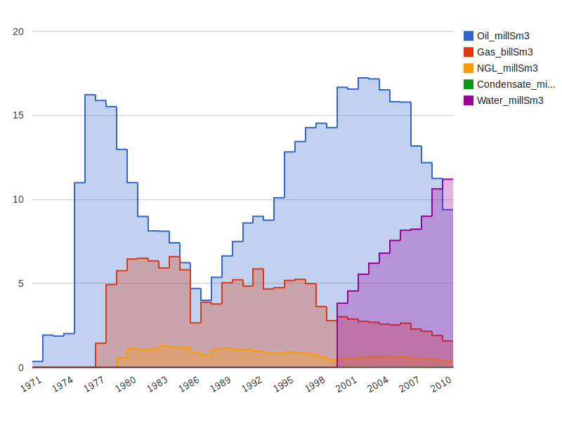
Figure 30: google.visualization.SteppedAreaChart
{kind=link}
Figure 31: google.visualization.Table
{kind=link}
Figure 32: google.visualization.AnnotatedTimeLine
{kind=link}
Figure 33: google.visualization.TreeMap
{kind=link}
Figure 34: sgvizler.visualization.DefList
{kind=link}
Figure 35: sgvizler.visualization.List
{kind=link}
Figure 36: sgvizler.visualization.Map
{kind=link}
Figure 37: sgvizler.visualization.Text
Figure 38: sgvizler.visualization.D3ForceGraph
{kind=link}
Figure 39: sgvizler.visualization.DraculaGraph
{kind=link}

Figure 40: sgvizler.visualization.MapWKT
Downloads
The downloads contain "compiled" and minified library, source code, documentation, tests, and examples.
Everything is also available at github: http://github.com/mgskjaeveland/sgvizler.
The code is released under the MIT licence.
Links
Sgvizler at other sites
- Sgvizler on github
- Sgvizler's page on the Semantic Web Standards wiki.
Sites using Sgvizler
Other SPARQL visualisers
Links to other folks who do something similar:
- Jeni Tennison describes how to convert the SPARQL XML results with XSLT to the format that the Google Visualization ''Query'' object is able to read.
- The Data-gov Wiki seems to use exactly this (i.e. the bullet above) approach.
- Spark "is a !JavaScript library that allows the simple integration of data from all over the Web in any HTML page, using a rich set of visualisations."
FAQ
See FAQ.
Contact
If your reason for contact relates to a running instance of Sgvizler, please provide a link to the page and explain the steps necessary to reproduce the situation that the question is about.
For bugs, suggestions/improvements, etc., file an issue at github: https://github.com/mgskjaeveland/sgvizler/issues
If you have a question which does not fit the format of an issue,
please use the mailing list sgvizler@list.data2000.no. Only
members of the list can post messages; to become a member, go here:
http://list.data2000.no/listinfo.cgi/sgvizler-data2000.no. The
mailinglist has an open archive:
http://list.data2000.no/pipermail/sgvizler-data2000.no/
To contact the developer of Sgvizler directly, use
m.g.skjaeveland@gmail.com, but please only when it is not possible
to use the other channels.
MWEs
This section contains the complete listings of some of the examples linked to from this page. These should be possible to run from any webserver.
quick-start.html
<html> <head> <title>MWE</title> <script type="text/javascript" src="//cdnjs.cloudflare.com/ajax/libs/jquery/1.9.0/jquery.js"></script> <script type="text/javascript" src="https://www.google.com/jsapi"></script> <script type="text/javascript" src="http://mgskjaeveland.github.io/sgvizler/v/0.6/sgvizler.js"></script> <script> $(document).ready( function (){ sgvizler.containerDrawAll(); } ); </script> </head> <body> <div id="example" data-sgvizler-endpoint="http://sws.ifi.uio.no/sparql/npd" data-sgvizler-query="SELECT ?class (count(?instance) AS ?noOfInstances) WHERE{ ?instance a ?class } GROUP BY ?class ORDER BY ?class" data-sgvizler-chart="google.visualization.PieChart" style="width:800px; height:400px;"></div> </body> </html>
hello-world.html
<html> <head> <title>MWE</title> <script type="text/javascript" src="//cdnjs.cloudflare.com/ajax/libs/jquery/1.9.0/jquery.js"></script> <script type="text/javascript" src="https://www.google.com/jsapi"></script> <script type="text/javascript" src="http://mgskjaeveland.github.io/sgvizler/v/0.6/sgvizler.js"></script> <script> var MyOwnNamespace = {}; MyOwnNamespace.HelloWorld = sgvizler.chartsAdd( // 1. arg: module. "MyOwnNamespace", // 2. arg: function name. "HelloWorld", // 3. arg: visualisation function. function (datatable, chartOptions) { // collect from numbers from the datatable: var c, noColumns = datatable.getNumberOfColumns(), r, noRows = datatable.getNumberOfRows(), // set default values for chart options opt = $.extend({ word: 'Hello World' }, chartOptions), tablecontents = ""; for (r = 0; r < noRows; r += 1) { tablecontents += '<tr>'; for (c = 0; c < noColumns; c += 1) { tablecontents += '<td>' + opt.word + '</td>'; } tablecontents += '</tr>'; } $(this.container) .empty() .html(tablecontents); // Using an external library, loaded by the dependencies (arg. 4) new Tablesort(this.container); }, // 4. arg: dependencies. 'Tablesort' is the function we need. { Tablesort: "//cdnjs.cloudflare.com/ajax/libs/tablesort/1.6.1/tablesort.min.js" } ); $(document).ready( function (){ sgvizler.containerDrawAll(); } ); </script> </head> <body> <table id="example" style="border: 1px solid brown;" data-sgvizler-endpoint="http://dbpedia.org/sparql" data-sgvizler-query="SELECT * { ?s ?p ?o, ?o2 } LIMIT 6" data-sgvizler-chart="MyOwnNamespace.HelloWorld" data-sgvizler-chart-options="word=Hi World"> </table> </body> </html>
usage-container-drawall.html
<html> <head> <title>MWE</title> <script type="text/javascript" src="//cdnjs.cloudflare.com/ajax/libs/jquery/1.9.0/jquery.js"></script> <script type="text/javascript" src="https://www.google.com/jsapi"></script> <script type="text/javascript" src="http://mgskjaeveland.github.io/sgvizler/v/0.6/sgvizler.js"></script> <script> sgvizler .prefix("ex", "http://example.org#") .defaultEndpointURL("http://dbpedia.org/sparql") .defaultQuery("SELECT * { ?a ?b ?c, ?d, ?e } LIMIT 7") .defaultChartFunction("sgvizler.visualization.Table") .defaultChartWidth(500) .defaultChartHeight(500); $(document).ready( function (){ sgvizler.containerDrawAll(); } ); </script> </head> <body> <div id="myExample" data-sgvizler-endpoint="http://sws.ifi.uio.no/sparql/npd" data-sgvizler-query="SELECT ?class (count(?instance) AS ?noOfInstances) WHERE{ ?instance a ?class } GROUP BY ?class ORDER BY ?class" data-sgvizler-chart="google.visualization.PieChart" data-sgvizler-chart-options="is3D=true|title=Number of instances" style="width:800px; height:400px;"></div> </body> </html>
usage-container-drawone.html
<html> <head> <title>MWE</title> <script type="text/javascript" src="//cdnjs.cloudflare.com/ajax/libs/jquery/1.9.0/jquery.js"></script> <script type="text/javascript" src="https://www.google.com/jsapi"></script> <script type="text/javascript" src="http://mgskjaeveland.github.io/sgvizler/v/0.6/sgvizler.js"></script> <script> sgvizler .prefix("ex", "http://example.org#") .defaultEndpointURL("http://dbpedia.org/sparql") .defaultQuery("SELECT * { ?a ?b ?c, ?d, ?e } LIMIT 7") .defaultChartFunction("sgvizler.visualization.Table") .defaultChartWidth(500) .defaultChartHeight(500); $(document).ready( function (){ sgvizler.containerDraw("myExample"); } ); </script> </head> <body> <div id="myExample" data-sgvizler-endpoint="http://sws.ifi.uio.no/sparql/npd" data-sgvizler-query="SELECT ?class (count(?instance) AS ?noOfInstances) WHERE{ ?instance a ?class } GROUP BY ?class ORDER BY ?class" data-sgvizler-chart="google.visualization.PieChart" data-sgvizler-chart-options="is3D=true|title=Number of instances" style="width:800px; height:400px;"></div> </body> </html>
usage-query-form.html
<html> <head> <title>MWE</title> <script type="text/javascript" src="//cdnjs.cloudflare.com/ajax/libs/jquery/1.9.0/jquery.js"></script> <script type="text/javascript" src="https://www.google.com/jsapi"></script> <script type="text/javascript" src="http://mgskjaeveland.github.io/sgvizler/v/0.6/sgvizler.js"></script> <script> sgvizler .prefix("ex", "http://example.org#") .defaultEndpointURL("http://dbpedia.org/sparql") .defaultQuery("SELECT * { ?a ?b ?c, ?d, ?e } LIMIT 7") .defaultChartFunction("sgvizler.visualization.Table") .defaultChartWidth(500) .defaultChartHeight(500); </script> </head> <body> <div id="myForm"></div> <script type="text/javascript"> $(document).ready(function() { sgvizler.formDraw("myForm"); }); </script> </body> </html>
usage-api.html
<html> <head> <title>MWE</title> <script type="text/javascript" src="//cdnjs.cloudflare.com/ajax/libs/jquery/1.9.0/jquery.js"></script> <script type="text/javascript" src="https://www.google.com/jsapi"></script> <script type="text/javascript" src="http://mgskjaeveland.github.io/sgvizler/v/0.6/sgvizler.js"></script> <script> sgvizler .prefix("ex", "http://example.org#") .defaultEndpointURL("http://dbpedia.org/sparql") .defaultQuery("SELECT * { ?a ?b ?c, ?d, ?e } LIMIT 7") .defaultChartFunction("sgvizler.visualization.Table") .defaultChartWidth(500) .defaultChartHeight(500); </script> </head> <body> <script> var Q = new sgvizler.Query(); // Create a Query instance. // Values may also be set in the sgvizler object---but will be // overwritten here. Q.query("SELECT * {?s ?p ?o} LIMIT 10") .endpointURL("http://dbpedia.org/sparql") .endpointOutputFormat("json") // Possible values 'xml', 'json', 'jsonp'. .chartFunction("google.visualization.Table") // The name of the function to draw the chart. .draw("myElementID"); // Draw the chart in the designated HTML element. </script> <div id="myElementID"></div> </body> </html>